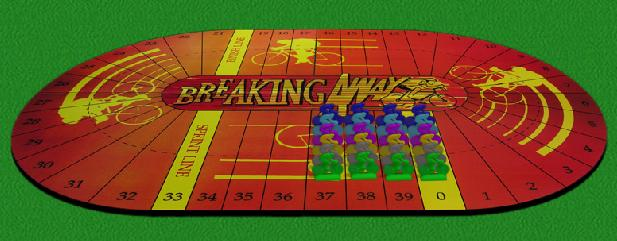
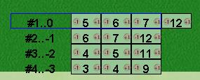

|
|
|
The game is for three to six players, each player has a team of four cyclists. The race is 2 1/2 times around the track, for a total of 100 divisions on the track, starting at 0. Note that although the riders are physically started at -1 -2 and -3, the race begins from 0 and their initial movement will be from 0. The race is 100 track divisions, 2 1/2 times around the track. That is, twice past the sprint line at 33 and 73 and past the finish line at 100. |
 |
|||||||||||||||||||||||||||
Before the start
of the race,
each player secretly adjusts the initial movement distances available
to his riders.
|
 |
|||||||||||||||||||||||||||
| Players
Move one at a time, starting with the leading rider, then
the
second place rider and so on. The players leave the track row
in
the
same order that they arrived. Normally this will be from
inside
to outside of the track, but riders will sometimes cut on the inside to
maintain a consistent line. The player to move must use one of his 3 or 4 available distances. |
New
Movement
Distances are assigned after all players have
moved.
The key consideration is the number
of riders ahead in the pack. The
number of riders
ahead is the drafting
factor.
Riders
in
the same row do not count, and the pack ends with any empty
row. Each rider gets 3+the drafting factor as his
new
movement. Special rule for Break Away riders when a new rider becomes the lead rider, and he is the only rider in the front row, his new movement is the number of spaces ahead of the next rider (instead of 3), even if this number is less than 3. This alternate rule applies only on the turn in which a new rider takes the lead. Lapped Riders: is possible that some riders fall so far behind that the main pack of riders passes them on the track. It is not possible to draft these riders (although they can still draft each other). Normally, these riders will be positioned on the outer edges of the track to help make it apparent. |
|||||||||||||||||||||||||||
| Points are awarded
to the first 8
players to cross the sprint and finish lines according to this
table.
The player with the most points at the end of the race wins the game. |
|
| E-Mail: | Go to BoardSpace.net home page |